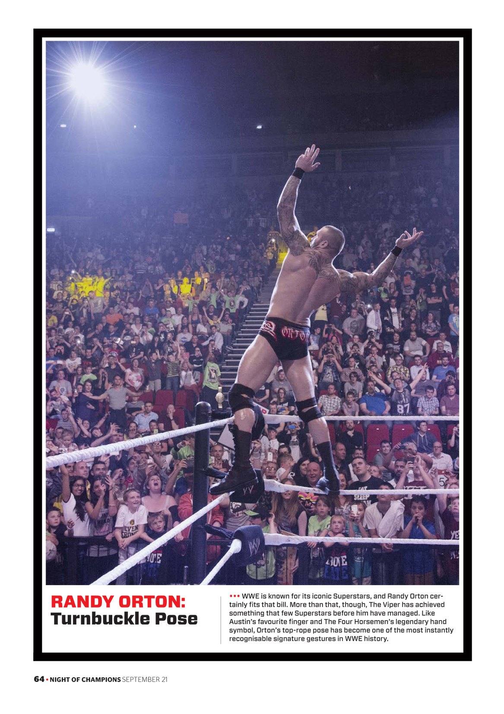

Randy Orton
-The Apex predator and the Viper

In August of 2004, Randy defeated World Heavyweight Champion Chris Benoit at SummerSlam to become the youngest person ever to hold a title in WWE history at the age of 24.
-
In 1980,April 1st
Randy Keith orton was born in knoxville,Tennessee.
-
His Parents were
Randy orton , son of Elaine and professional wrestler Bob Orton Jr.
-
Residence
St.charles,Missouri, U.S.
-
Spouse(s)
Samantha Speno(m 2007, div 2013) and Kimberly kessler(m 2015)
-
Height and Weight
Height: 6ft 5 in, Weight: 250lb(110Kg)